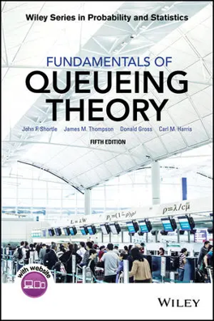
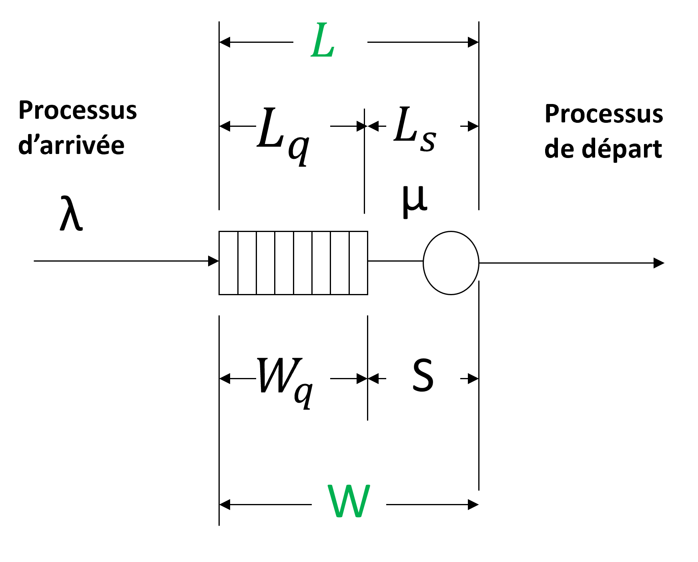
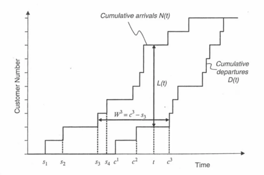

FIE-2-IMTNS-2 Course 3 Slides
Adrien Wartelle
E.C. Outils d’Analyse et de Modélisation des Flux en Santé
U.E. E4-2-IMTNS-1 Ingénierie et Management de la Transformation Numérique en Santé
2025-2026
Adrien Wartelle (adrien.wartelle@univ-jfc.fr)
Objectifs du module
Pouvoir, savoir :
Analyser un jeu de données lié à un processus de flux en santé grâce aux fondements de la science des données
Mettre en place des modèles de file d’attente analytiques et de simulation
Entamer une modélisation axée sur les données grâce au Process Mining
Suivre une démarche scientifique et critique fondée sur une validation conceptuelle et numérique
Références complémentaires (1)
Référence pour l’analyse :
- Wickham, H., & Grolemund, G: R for data science (Vol. 2). Sebastopol : O’Reilly. (2017).
R for Data Science
Références complémentaires (2)
Référence pour la modélisation :
- Shortle, J.F., Thompson, J.M., Gross, D., Harris, C.M.: Fundamentals of Queueing Theory: Fifth Edition. John Wiley & Sons, Inc. (2017).

Fundamentals of Queueing Theory
Références complémentaires (3)
Articles de référence pour la modélisation du système de soins :
Badr, S., Nyce, A., Awan, T., Cortes, D., Mowdawalla, C., Rachoin, J.-S.: Measures of emergency department crowding, a systematic review : how to make sense of a long list Open Access Emergency Medicine, 5–14 (2022)
Bhattacharjee P, Ray PK. Patient flow modelling and performance analysis of healthcare delivery processes in hospitals: A review and reflections. Computers & Industrial Engineering. 2014;78:299-312
Références complémentaires (4)
Articles de référence pour la modélisation du système de soins :
Whitt, W., & Zhang, X. A data-driven model of an emergency department. Operations Research for Health Care, 12, 1-15 (2017)
Wartelle A, Mourad-Chehade F, Yalaoui F, Laplanche D, Sanchez S. Data-driven queueing modelling: a simulation case study of emergency department crowding. BMJ Health & Care Informatics. 2026;33:e101462. https://doi.org/10.1136/bmjhci-2025-101462
Références complémentaires (5)
Articles de référence pour la modélisation du système de soins :
- Wartelle, A., Mourad-Chehade, F., Yalaoui, F. et al. Changing the perspective of system crowding evaluation using a new congestion measure: application to the Emergency Department. Oper Res Int J 24, 53 (2024). https://doi.org/10.1007/s12351-024-00855-4
Internet
Organisation : Séances (hybrides)
| Date | Modalité | Contenu | Evaluation |
|---|---|---|---|
| Mardi 13/01 | 2h CM + 2h TD/TP | Introduction au module et à l’analyse (EDA) | Début devoir 1 (pour le 25/01) |
| Lundi 19/01 | 2h CM + 2h TD/TP | Introduction à la modélisation des flux par file d’attente | Début devoir 2 (pour le 01/02) |
| Mardi 27/01 | 2h CM + 2h TD/TP | Simulation 1 sous Anylogic | Début devoir 3 (pour le 08/02) |
| Mardi 03/02 | 2h CM + 2h TD/TP | Process Mining et Simulation 2 sous Anylogic | Début devoir 4 (pour le 23/03) |
| Mardi 10/02 | 4h TD/TP | Démarche de validation et correction | Correction devoir 1 à 3 |
| Mardi 23/03 | Soutenances (2h) | Évaluation et correction | Examen (devoir 4 et +) |
Organisation : Modalité d’évaluation
Devoir 1 : Livrable numérique, individuel de coefficient 20%
Devoir 2 : Livrable manuscrit / numérique, individuel de coefficient 20%
Devoir 3 : Livrable numérique, en groupe de 2 de coefficient 30%
Devoir 4 : Livrables numérique / manuscrits / oraux, en groupe de 2 de coefficient 30%
Formulation du cadre mathématique
Expliciter concrètement un modèle quantitatif de flux
En quoi cela consiste
Avant toute hypothèse, théorème, résultat, une théorie doit s’inscrire dans un cadre mathématique de notations, définitions et propriétés.
Dans notre contexte, celui-ci se définit par l’ensemble des notations et de la caractérisation mathématique générale des états, comportements et mesures de performance sous jacent du modèle.
Objectifs
Trop souvent délaissée par les ingénieurs et les informaticiens, la modélisation mathématique est primordiale pour :
Décrire avec aucune ambiguïté les états, les comportements et les mesures de performances sous jacent du modèle
Établir une abstraction facilitant la réflexion sur le modèle
Faciliter l’implémentation de l’évaluation du système analytiquement ou numériquement
Cadre général d’un modèle à 1 station
| Notion mathématique | Description |
|---|---|
| \(t \in \mathbb{R}^+\) | Variable de temps |
| \(m \in \mathbb{N}\) | Indice de client (patient) par ordre d’arrivée |
| \(ta_m, td_m \in \mathbb{R}^+\) | Temps d’arrivée et de départ du patient m dans la station |
| \(A(t) : \mathbb{R}^+ \to \mathbb{N}\) | Processus de comptage d’arrivée de la station |
| \(A(t) \equiv \sum_{m\in\mathbb{N}} \mathbb{I}_{ta_m \in [0,t]}\) | Relation avec les temps d’arrivées |
| \(D(t) : \mathbb{R}^+ \to \mathbb{N}\) | Processus de comptage de départ de la station |
| \(D(t) \equiv \sum_{m\in\mathbb{N}} \mathbb{I}_{td_m \in [0,t]}\) | Relation avec les temps de départ |
Distinction file, serveur
| Notion mathématique | Description |
|---|---|
| \(tdq_m \in \mathbb{R}^+\) | Temps de départ de la file d’attente |
| \(D_q(t) : \mathbb{R}^+ \to \mathbb{N}\) | Processus de comptage de départ de la file d’attente |
| \(D_q(t) \equiv \sum_{m\in\mathbb{N}} \mathbb{I}_{tdq_m \in [0,t]}\) | Relation avec les temps de départ de la file d’attente |
Mesures de performances locales
| Notion mathématique | Description |
|---|---|
| \(l(t) \equiv A(t) - D(t) = l_q(t) + l_s(t)\) | Niveau d’occupation au temps \(t\) |
| \(l_q(t) \equiv A(t) - D_q(t)\) | Niveau d’occupation en file au temps \(t\) |
| \(l_s(t) \equiv D_q(t) - D(t)\) | Niveau d’occupation en serveur au temps \(t\) |
| \(w_m \equiv td_m - ta_m = wq_m + s_m\) | Temps d’attente / séjour du patient \(m\) |
| \(wq_m \equiv tdq_m - ta_m\) | Temps d’attente en file du patient \(m\) |
| \(s_m \equiv td_m - tdq_m\) | Temps de service du patient \(m\) |
Mesures de performances globales (1)
Performances moyennes :
\(L([t_0,t_1]) \equiv \frac{1}{t_1-t_0}\int_{t_0}^{t_1}l(t)dt \underset{t_1\to +\infty}{\longrightarrow} L = L_q + L_s\)
- (définition similaire pour \(L_q\) et \(L_s\))
\(W = \lim_{N\to +\infty}\frac{1}{N}\sum_{m\leq N} w_m = W_q + S\)
- (définition similaire pour \(W_q\) et \(S\))
\(W_d([t_0,t_1]) = \frac{1}{\sum_{m \in \mathbb{N}} \mathbb{I}_{td \in [t_0, t_1]}} \sum_{m \in \mathbb{N}} \mathbb{1}_{td \in [t_0, t_1]} w_m \underset{t_1\to +\infty}{\longrightarrow} W\)
- (définition similaire pour \(W_{d,s})\)
\(W_a([t_0,t_1]) = \frac{1}{\sum_{m \in \mathbb{N}} \mathbb{I}_{ta \in [t_0, t_1]}} \sum_{m \in \mathbb{N}} \mathbb{1}_{ta \in [t_0, t_1]} w_m \underset{t_1\to +\infty}{\longrightarrow} W\)
- (définition similaire pour \(W_{a,s}\))
Mesures de performances globales (2)
| Notion mathématique | Description |
|---|---|
| \(\lambda([t_0,t_1]) \equiv \frac{A(t_1) - A(t_0)}{t_1-t_0} \underset{t_1\to +\infty}{\longrightarrow} \lambda\) | Taux d’arrivée moyen |
| \(\delta([t_0,t_1]) \equiv \frac{D(t_1) - D(t_0)}{t_1-t_0} \underset{t_1\to +\infty}{\longrightarrow} \delta\) | Taux de départ moyen |
| \(\mu([t_0,t_1]) \equiv \frac{1}{W_{d,s}([t_0,t_1])} \underset{t_1\to +\infty}{\longrightarrow} \mu\) | Taux de service moyen |
Mesures de performances globales (3)

Visualisation des mesures de performances d’une station de file d’attente
Extension de la modélisation (1)
Cette formulation peut facilement être étendue à de nombreux cas :
Multiples serveurs
Multiples file d’attente
Comportement spéciaux de client / patient de départ avant service (\(D_{others}(t)\))
Multiples classes de client / patient \(c_m \in \{1..K\}\)
Multiples stations \(i \in \{1..I\}\)
Approximations discrètes \(A_n \sim A(t)\) et fluides \(A(t_1) - A(t_0) \in \mathbb{R}^+\)
Extension de la modélisation (2)
Dans le cadre de multiples stations, il faudra aussi modéliser les comportements de parcours patient :
En intégrant des processus de transitions \(D_{i_1,i_2}(t)\) des clients / patients entre stations \(i_1\) et \(i_2\)
L’arrivée à une station peut alors s’écrire \(A_i(t) = \sum_{i_0\in \{1..I\}} D_{i_0,i}(t)\)
Extension de la modélisation (3)
Ces processus de transitions pourront être modélisés de 2 manières :
par des probabilités de transitions \(p_{i_1,i_2}\) (qui peuvent être fonction des classes des patients, du temps …)
ou directement par des probabilités de circuits patients \(u_m\) : \(\mathbb{P}(u_m = (i_1,i_2,...,i_{|u_m|}))\)
Extension de la modélisation (4)
L’utilisation d’approximations est parfois utile 1 :
Les modèles fluides permettent une évaluation analytiques directe qui approxime bien le comportement de certaines files d’attentes comme les modèles \(M/M/+\infty\) ou \(G/GI/+\infty\) avec une très forte congestion \(\frac{\lambda}{\mu}\)
Les modèles discrets permettent une modélisation plus fine des évènements de départs et d’arrivées en les générant par probabilités d’occurrence dans un intervalle de temps plutôt que par un temps
Nous sommes enfin prêt à évaluer !
Une fois seulement le cadre mathématique clairement formulé peut-on commencer à évaluer un modèle.
Dans la pratique, cette étape est trop souvent sautée par précipitation et on peut aboutir à des confusions sur ce que le modèle représente, sur son fonctionnement et à une évaluation inadaptée avec des outils trop complexes ou trop simples.
Evaluation par la théorie des files d’attente
Dérivée de la théorie de Markov
Loi de Little (1)
- Résultat (le plus) fondamental reliant l’occupation au temps d’attente asymptotiques
\[ L = \lambda W \] Valable dès que : \(L<+\infty\), \(W<+\infty\) et \(\lambda<+\infty\)
Loi de Little (2)

Illustration de la loi de Little
Loi de Little (3)
Eléments de compréhension du résultat :
\[L = \lim_{t \to + \infty} \frac{1}{t} \sum_m \mathbb{I}_{ta_m < t} (\min(td_m,t) - ta_m)\]
\[ \lambda = \lim_{t \to +\infty} \frac{1}{t}\sum_m \mathbb{I}_{ta_m < t}\]
\[W = \lim_{t \to + \infty} \frac{1}{\sum_m \mathbb{I}_{td_m < t}}\sum_m \mathbb{I}_{td_m < t} (td_m - ta_m)\]
Les processus de Markov (1)
La théorie des files d’attente repose en grande partie sur la théorie des processus de Markov.
Un processus de Markov est un processus stochastique (aléatoire) qui possède une propriété fondamentale : son futur ne dépend que de son état présent, et non de son état passé. En d’autres termes, pour prédire l’avenir du système, la connaissance de l’état actuel est suffisante.
Les processus de Markov (2)
Le cadre mathématique
- Soit \((\Omega, \mathcal{F}, P)\) un espace de probabilité. Un processus de Markov est une famille de variables aléatoires \((X_t)_{t \in T}\) (souvent \(T = \mathbb{R}^+\)) à valeurs dans un ensemble \(E\), appelé espace d’états (exemple : \(\mathbb{N}\)).
Les processus de Markov (3)
Le cadre mathématique
\(T\) est l’ensemble des temps (souvent \(\mathbb{N}\) pour le temps discret ou \([0, +\infty[\) pour le temps continu). Ici, on se place dans le cas continu.
\(E\) peut être fini, dénombrable (chaînes de Markov) ou continu (processus de diffusion). Ici, on se place dans le cas discret.
Les processus de Markov (4)
Le processus \((X_t)\) est un processus de Markov si, pour tous temps \(s, t\) tels que \(0 \le s < t\), et pour tout ensemble mesurable \(B \subset E\), on a :
\[ \forall s, t\ /\ 0 \le s < t,\ P(X_t \in B \mid \mathcal{F}_s) = P(X_t \in B \mid X_s)\] En résumé, connaître l’ensemble des états liés à \(\mathcal{F}_s\), jusqu’à l’instant présent \(s\), ne donne pas plus d’information que l’état présent \(X_s\).
Les processus de Markov (5)
Propriété sur la Dépendance locale :
- La probabilité que le processus soit dans un état futur \(B\) au temps \(t\), sachant tout son historique jusqu’au temps \(s\), ne dépend en réalité que de sa position / son état exacte au temps \(s\).
Les processus de Markov (6)
Propriété sur la Filtration (\(\mathcal{F}_s\)) :
- Elle formalise “le passé”. Dire que le processus est de Markov revient à dire que la connaissance de la tribu \(\mathcal{F}_s\) n’apporte pas plus d’information que la seule connaissance de la variable \(X_s\).
Les processus de Markov (7)
Propriétés de Trajectoire en temps continu :
Càdlàg : “Continue à droite, limite à gauche”. Cela signifie que le processus peut faire des sauts, mais qu’il est bien défini juste avant et juste après chaque changement. (Valable pour juste pour les procesus de Markov)
Propriété de Markov Forte : Le processus reste Markovien même si on l’arrête à un temps aléatoire (appelé “temps d’arrêt”), comme le premier instant où il entre dans une zone donnée.
Les processus de Markov (8)
- Comparaison Temps Discret vs Temps Continu
| Caractéristique | Temps Discret (\(n\)) | Temps Continu (\(t\)) |
|---|---|---|
| Évolution | Matrice de transition \(P\) | Semi-groupe \((P_t)_{t \ge 0}\) |
| Dynamique | \(X_{n+1} = f(X_n, \epsilon_n)\) | Générateur infinitésimal \(Q\) |
| Équation clé | \(P^n = P \cdot P \dots P\) | Équations de Kolmogorov (Forward/Backward) |
Les processus de Markov (9)
On note \(\mathcal{p}(t) = (p_0(t) ... p_i(t) ...)^t\) la probabilité d’état des états i à l’instant t.
Pour un processus de Markov homogène, la probabilité de transition ne dépend que de l’écart de temps \(h = t - s\). On la définit par :
\[P_h(x, z) = P(X_{s+h} = z \mid X_s = x)\]
Les processus de Markov (10)
Ces probabilités respectent l’équation de Chapman-Kolmogorov, qui stipule que pour passer de \(x\) à \(z\) en un temps \(t+s\), on doit passer par un état intermédiaire \(y\) au temps \(t\) :
\[P_{t+s}(x, z) = \sum_{y \in E} P_s(y, z) \, P_t(x, y)\]
Les processus de Markov (11)
Contrairement au temps discret où l’on utilise une matrice de transition, le temps continu se caractérise par ce qui se passe sur un intervalle de temps “infiniment petit”. La caractérisation des dynamiques de transition doit se faire relativement au temps.
Dans le cas d’un espace d’états discret \(E\), le générateur est une matrice \(Q = (q_{ij})_{i, j \in E}\) (souvent appelée matrice de taux ou matrice d’intensité) qui régit la dynamique instantanée du processus.
Les processus de Markov (12)
Définition et Construction
- Le générateur \(Q\) représente la dérivée de la probabilité de transition \(P_t\) à l’origine (\(t=0\)) :
\[Q = \lim_{h \to 0^+} \frac{P_h - P_0}{h}\]
Les processus de Markov (13)
Pour chaque paire d’états \((i, j) \in E^2\) :
Taux de transition (\(i \neq j\)) : \(q_{ij} \ge 0\) est la “vitesse” à laquelle le processus saute de \(i\) vers \(j\).
Taux de conservation (\(i = j\)) : \(q_{ii} = - \sum_{j \neq i} q_{ij}\).
Les processus de Markov (14)
Grâce à la propriété de Markov, on a :
\[\frac{dp(t)}{dt} = p(t)Q \implies p(t) = e^{tQ}\]
Où \(e^{tQ}\) est l’exponentielle de matrice : \(e^{tQ} = \sum_{k=0}^{\infty} \frac{(tQ)^k}{k!}\).
Les processus de Markov (15)
Le générateur \(Q\) permet de décomposer le mouvement du processus avec :
- Temps de séjour : Si le processus est dans l’état \(i\), il y reste pendant un temps \(T_i\) suivant une loi exponentielle de paramètre \(\lambda_i = -q_{ii}\). \[E[T_i] = \frac{1}{-q_{ii}}\]
Les processus de Markov (16)
- Saut : Au bout de ce temps \(T_i\), il saute vers un état \(j \neq i\) avec la probabilité : \[\pi_{ij} = \frac{q_{ij}}{\sum_{k \neq i} q_{ik}} = \frac{q_{ij}}{-q_{ii}}\]
On peut alors construire une chaîne de Markov (temps discret) comme sous modèle du processus à temps continu qui ne prend plus en compte le temps passé dans chaque étape.
Les processus de Markov (17)
- Interprétation : Le générateur décrit la “vitesse” et la direction du saut (pour les processus de sauts) ou la dérive et la diffusion (pour des processus comme le mouvement brownien).
File d’attente markovienne (1)
Les files d’attente de type M/M/[…] sont par essence des processus de Markov, et plus spécifiquement des processus de Naissance et de Mort dans l’espace d’état \(\mathbb{N}^+\) correspondant au niveau d’occupation \(l(t)\).
Naissance : \((l(t)=i \to l(t+dt) = i+1)\) avec un taux \(q_{i,i+1}=\lambda_i\).
Mort : \((l(t)=i \to l(t+dt) = i-1)\) avec un taux \(q_{i,i-1}=\mu_i\) pour \(i\geq 0\).
File d’attente markovienne (2)
La matrice prend la forme suivante :
\[Q = \begin{pmatrix} -\lambda_0 & \lambda_0 & 0 & 0 & \dots \\ \mu_1 & -(\lambda_1 + \mu_1) & \lambda_1 & 0 & \dots \\ 0 & \mu_2 & -(\lambda_2 + \mu_2) & \lambda_2 & \dots \\ \vdots & \vdots & \ddots & \ddots & \ddots \end{pmatrix}\]
File d’attente markovienne (3)
File d’attente markovienne (4)
File d’attente markovienne (5)
\(\lambda_i\) : Taux d’arrivée (nouveaux clients).
\(\mu_i\) : Taux de service (départ des clients).
Équilibre : Si une distribution stationnaire de l’état \(l(t)\) notée \(p\) (ou souvent \(\pi\)) existe, elle vérifie l’équation de flux local (équations de balance des flux) : \[p_i \lambda_i = p_{i+1} \mu_{i+1}\]
- Par définition, une distribution stationnaire vérifie \(\frac{dp(t)}{dt} = 0\)
File d’attente markovienne (6)
Preuve des équations d’équilibre (pour i > 0) :
\[\frac{dp(t)}{dt} = 0\text{ soit } p^tQ = 0\]
Pour \(i=1\) :
\[p_i(t) * q_{i,i}dt + p_{i+1}(t) * q_{i+1,i}dt + p_{i-1}(t) * q_{i-1,i}dt = 0 \]
En enlevant les \(dt\) :
\[-p_i(t) (\lambda_i + \mu_i) + p_{i+1}(t) \mu_{i+1} + p_{i-1}(t) \lambda_{i-1} = 0 \]
File d’attente markovienne (7)
Or pour \(i=0\) :
\[-p_i(t) \lambda_i + p_{i+1}(t) \mu_{i+1} = 0 \]
\[ p_{i+1}(t) \mu_{i+1} = p_i(t) \lambda_i \]
File d’attente markovienne (8)
Pour \(i=1\) dans l’équation centrale :
\[p_{i-1}(t) \lambda_{i-1} = p_{i}(t) \mu_i\]
Donc :
\[-p_i(t) (\lambda_i + \mu_i) + p_{i+1}(t) \mu_{i+1} + p_{i}(t) \mu_i = 0 \]
\[-p_i(t) \lambda_i + p_{i+1}(t) \mu_{i+1} = 0 \]
Donc en utilisant le même raisonnement pour \(i>1\) par récurrence, on aprouvé nos équations de balance CQFD.
File d’attente markovienne (9)
On peut alors calculer la distriubtion asumptotique à partir de \(p_0\) :
\[p_n = \frac{\lambda_{n-1}\lambda_{n-2}...\lambda_0}{\mu_n\mu_{n-1}...\mu_1} p_0\ (n \geq 1)\] \[= p_0 \prod_{i=1}^{n}\frac{\lambda_{i-1}}{\mu_i} \]
File d’attente markovienne (10)
Puis calculer \(p_0\) :
\[ p_0 = \left( 1 + \sum_{n=1}^{+ \infty} \prod_{i=1}^{n} \frac{\lambda_{i-1}}{\mu_i} \right)^{-1} \]
La théorie de Markov nous assure de la convergence d’un processus de Markov 1 vers sa distribution stationnaire aussi appelé distribution asymptotique.
File d’attente markovienne (11)
On peut ensuite en déduire les principaux résultats de la théorie sur \(L\) et \(W\) grâce à la théorie ergodique et à la loi de Poisson :
\[L = \lim_{t_1 \to + \infty} \frac{1}{t_1-t_0}\int_{t_0}^{t_1}l(t)dt = \sum_{i \in \mathbb{N}}p_i * i \] \[L_q = \lim_{t_1 \to + \infty} \frac{1}{t_1-t_0}\int_{t_0}^{t_1}max(0,l(t)-1)dt = \sum_{i > 0}p_i * (i-1) \]
\[W = \frac{L}{\lambda}, W_q = \frac{L_q}{\lambda}\]
File d’attente markovienne (12)
De cela, on peux directement étudier 1 analytiquement plusieurs modèles :
Les modèles \(M/M/1\) avec \(q_{i,i-1} = \mu\)
- Lorsque \(\mu=0\), o nse retrouve avec un processus de Poisson
Les modèles \(M/M/c\) avec \(q_{i,i-1} = \mathbb{I}_{i < c} i\mu + \mathbb{I}_{i \geq c} c\mu\)
Les modèles \(M/M/+\infty\) avec \(q_{i,i-1} = i\mu\)
File d’attente markovienne (13)
Cas \(M/M/1\) :
\(p_0 = 1 -\rho\) (\(\rho \equiv \frac{\lambda}{\mu} < 1\) facteur de congestion / charge)
\(p_n = p_0 \rho^n\)
On peut obtenir ces résultats à partir d’une méthode itérative sur les équations de balance, de la fonction générative \(P(z) = \frac{1-\rho}{1-\rho z} (\rho <1, |z| \leq 1)\) ou encore de l’opérateur \(D\) dans l’équation aux différences \([\mu D^2 - (\lambda + \mu)D + \lambda]p_n=0\)
File d’attente markovienne (14)

File d’attente markovienne (14)
Cas \(M/M/1\) :
- \(L = \frac{\rho}{1-\rho} = \frac{\lambda}{\mu-\lambda}\)
- \(L_q = \frac{\rho^2}{1-\rho} = \frac{\lambda}{\mu-\lambda}\)

File d’attente markovienne (15)
Cas \(M/M/1\) :
- \(W = \frac{\rho}{\lambda(1-\rho)} = \frac{1}{\mu-\lambda}\)
- \(W_q = \frac{\rho}{\mu-\lambda}\)
Pour \(\lambda=1h^{-1}\), on obtient le même graphique que \(L\) et \(L_q\) ave mais avec des unités de temps en heure pour les ordonnées.
File d’attente markovienne (…)
Il existe de nombreuses extensions qui peuvent être étudiées tel que :
Modèle \(M/M/1/PC\) avec des classes de priorité
Modèle avec des comportements de fuites des clients influent sur le taux d’arrivée en file et ou en serveurs
Modèles \(M/M/1/FIFO/K/L\)
Réseau de file d’attentes
File d’attente markovienne (…)
Quelques résultats exactes existent pour des cas particuliers files d’attente non markoviennes :
\(E_{k_a}/E_{k_s}/1\)
\(M/G/1\)
\(G/GI/+\infty\)
Au delà, on ne dispose que de quelques approximations (exemple \(G/G/1\))
Réseaux de file d’attente (1)
Les réseaux de files d’attente étendent les modèles de station unique.
- Example de réseau en série :

Series queue
Réseaux de file d’attente (2)
Dans le cas de réseaux ouverts de Jackson ( Open Jackson Networks ) avec des hypothèses de comportement indépendant, on peut étudier chaque station de file d’attente indépendemment en tenant uniquement en compte des équations de traffic pour calculer le taux d’arrivée de chaque station \(j\) :
\[\lambda_j = \gamma_j + \sum_{j'=1}^{k} \lambda_{j'} r_{jj'}\]
\(\gamma_j\) : arrivées initiales
\(r_{jj'}\) : probabilités de routage
Réseaux de file d’attente (3)
Lorsque vous avez plusieurs classes de clients \(u \in U\), la formule reste similaire :
\[\lambda_j = \sum_{u\in U}\gamma_{u,j} + \sum_{u\in U}\sum_{j'=1}^{k} \lambda_{u,j'} r_{u,jj'}\]
Réseaux de file d’attente (4)
Goulet d’étranglement d’un réseau de file d’attente
Notion d’équilibre des charges
Pour le déterminer, on doit répondre à la question : “Quelle serait la première station à atteindre saturation (\(\mu=\lambda\)) si on augmentait le taux d’arrivée global \(\lambda\) ? Et ensuite le deuxième ? etc …
Expressions analytique possibles pour certain modèle
Réseaux de file d’attente (5)
- Le cas le plus simple est pour les système en série où la station / machine \(j^*\) goulet d’étranglement peut se trouver avec la station dont le taux de service (atteint lorsque \(\lambda_j \to +\infty\)) est minimal, c-à-d \(j^*= argmin_j(\mu_j)\)

Goulet d’étranglement dans un réseau en série
Réseaux de file d’attente (6)
- Dans le cas où les patients suivent un circuit …
Merci pour votre attention !
Les questions sont les bienvenues !